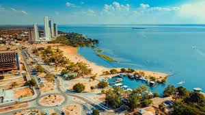

Tocantins é um estado localizado na região Norte do Brasil, criado em 1988. É conhecido por suas paisagens de cerrado, rios e uma economia que cresce com a agricultura, pecuária e mineração. Sua capital é Palmas, uma cidade moderna e planejada. Tocantins tem uma cultura diversificada e uma natureza bastante preservada, com muitas áreas de cerrado e rios importantes. Se quiser saber mais, é só pedir!
